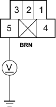
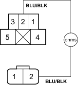
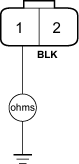

- Turn the ignition switch ON (II), then turn the A/C and fan switches ON.
Does the condenser fan run?
YES - Go to step 23.
NO - Replace the condenser fan motor. 
- Turn the A/C and fan switches OFF, then turn the ignition switch OFF.
- Disconnect the jumper wire.
- Remove the fan control relay from the multi-fuse/relay box and test it.
Is the relay OK?
YES - Go to step 26.
NO - Replace the fan control relay.
- Turn the ignition switch ON (II), then turn the A/C and fan switches ON.
- Measure the voltage between the No. 5 terminal of the fan control relay 5P socket and body ground.
FAN CONTROL RELAY 5P SOCKET

Is there battery voltage?
YES - Go to step 28.
NO - Repair open in the wire between the condenser fan and the fan control relay.
- Turn the A/C and fan switches OFF, then turn the ignition switch OFF.
- Disconnect the radiator fan 2P connector.
- Check for continuity between the No. 2 terminal of the fan control relay 5P socket and the No. 2 terminal of the radiator fan 2P connector.
FAN CONTROL RELAY 5P SOCKET

RADIATOR FAN 2P CONNECTOR
Wire side of female terminals
Is there continuity?
YES - Go to step 31.
NO - Repair open in the wire between the fan control relay and the radiator fan.
- Check for continuity between the No. 1 terminal of the radiator fan 2P connector and body ground.
RADIATOR FAN 2P CONNECTOR

Wire side of female terminals
Is there continuity?
YES - Replace the radiator fan motor.
NO - Check for an open in the wire between the radiator fan and body ground. If the wire is OK, check for poor ground at G301.